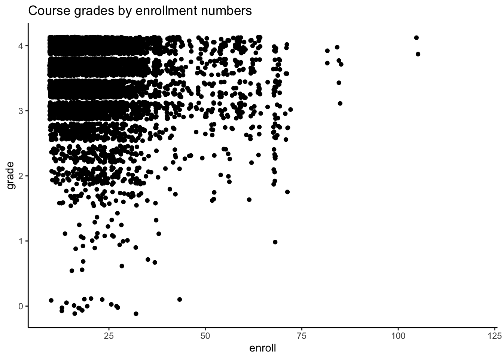
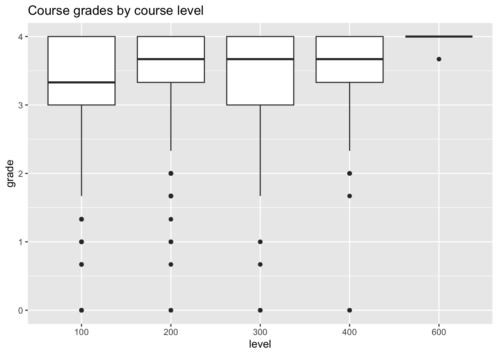
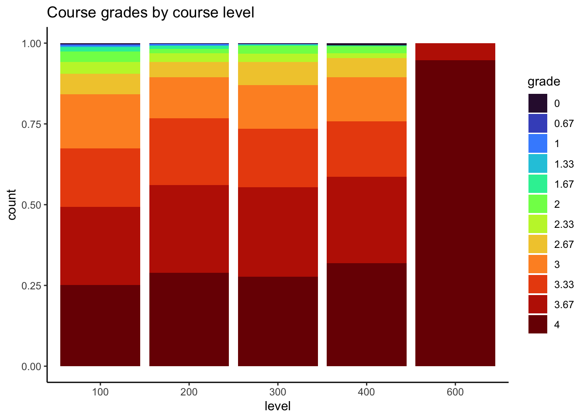
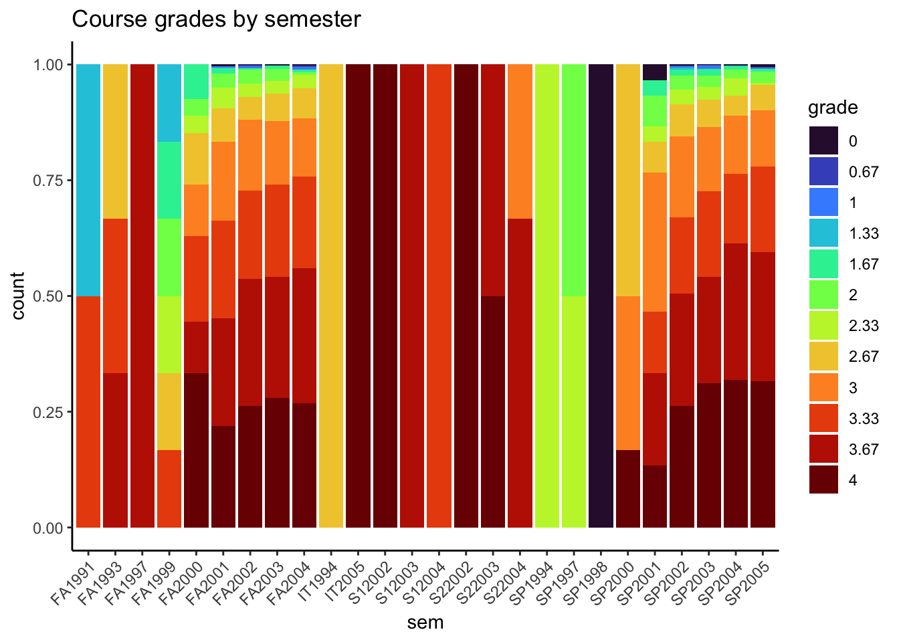
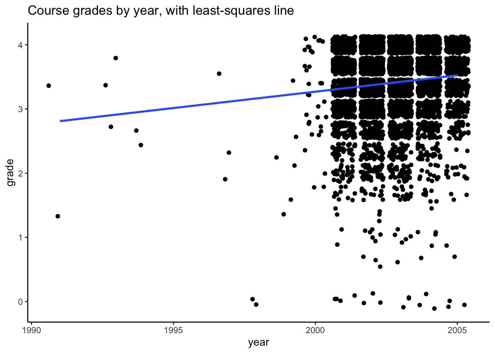

library(ggplot2)
library(dplyr)
library(readr)
homes <- read_csv("https://mac-stat.github.io/data/homes.csv")
homes <- homes %>%
mutate(across(c(Fuel.Type, Heat.Type, Sewer.Type), factor))Nested Models & F-Tests
Notes and in-class exercises
Notes
- You can download a template file to work with here.
- File organization: Save this file in the “Activities” subfolder of your “STAT155” folder.
Learning goals
By the end of this activity, you should be able to:
- Determine if one model is nested within another
- Determine which null and alternative hypotheses require an f-test
- Determine which f-tests require the use of the
anovafunction in R vs. the overall f-test given in regular regression output - Interpret the results of an f-test in context
Readings and videos
Please read the following notes before class:
- Reading: Section 7.3.4 in the STAT 155 Notes
Discussion
Nested models
“Nested models” are models where the covariates of one model are a subset of another model.
As an example, consider the following models for estimating the association between forced expiratory volume (FEV) and smoking status:
Model 1:
\[ E[FEV \mid smoke] = \beta_0 + \beta_1 smoke \]
Model 2:
\[ E[FEV \mid smoke, age] = \beta_0 + \beta_1 smoke + \beta_2 age \]
Here, Model 1 is “nested” inside Model 2, since the covariates included in Model 1 (only smoke) are a subset of those in Model 2 (both smoke and age).
An example of non-nested models are…
Model 3:
\[ E[FEV \mid smoke, height] = \beta_0 + \beta_1 smoke + \beta_2 height \]
Model 4:
\[ E[FEV \mid smoke, sex] = \beta_0 + \beta_1 smoke + \beta_2 sex \]
Here, even though Model 3 and Model 4 both contain smoke as explanatory variables, neither is nested in the other, since sex is not a part of Model 3, and height is not a part of Model 4.
Why should we care about nested models?
Comparing nested models provides us a way of looking at the usefulness of multiple coefficients at the same time. Looking at multiple coefficients is relevant when…
- we are adding a single categorical predictor with >2 categories to a model
- we are adding several different predictors to a model
Example: house prices
Research question: Does fuel type provide meaningful additional information on house price after considering square footage (Living.Area) and Age?
- How can we use adjusted R-squared to answer this question? (Why would we use adjusted R-squared instead of multiple R-squared?)
homes_mod_small <- lm(Price ~ Living.Area + Age, data = homes)
homes_mod_large <- lm(Price ~ Living.Area + Age + Fuel.Type, data = homes)
summary(homes_mod_small)
Call:
lm(formula = Price ~ Living.Area + Age, data = homes)
Residuals:
Min 1Q Median 3Q Max
-267300 -40485 -8491 27303 557613
Coefficients:
Estimate Std. Error t value Pr(>|t|)
(Intercept) 22951.791 5536.960 4.145 3.56e-05 ***
Living.Area 111.277 2.713 41.019 < 2e-16 ***
Age -224.751 57.576 -3.904 9.84e-05 ***
---
Signif. codes: 0 '***' 0.001 '**' 0.01 '*' 0.05 '.' 0.1 ' ' 1
Residual standard error: 68820 on 1725 degrees of freedom
Multiple R-squared: 0.5118, Adjusted R-squared: 0.5112
F-statistic: 904.2 on 2 and 1725 DF, p-value: < 2.2e-16summary(homes_mod_large)
Call:
lm(formula = Price ~ Living.Area + Age + Fuel.Type, data = homes)
Residuals:
Min 1Q Median 3Q Max
-258471 -39727 -8018 27248 550481
Coefficients:
Estimate Std. Error t value Pr(>|t|)
(Intercept) 32778.478 6091.930 5.381 8.44e-08 ***
Living.Area 108.202 2.823 38.323 < 2e-16 ***
Age -230.127 60.046 -3.833 0.000131 ***
Fuel.Type3 -16699.878 4545.204 -3.674 0.000246 ***
Fuel.Type4 -9886.096 5270.819 -1.876 0.060875 .
---
Signif. codes: 0 '***' 0.001 '**' 0.01 '*' 0.05 '.' 0.1 ' ' 1
Residual standard error: 68560 on 1723 degrees of freedom
Multiple R-squared: 0.5161, Adjusted R-squared: 0.5149
F-statistic: 459.3 on 4 and 1723 DF, p-value: < 2.2e-16We can also use the anova() function to approach our research question:
anova(homes_mod_small, homes_mod_large)Analysis of Variance Table
Model 1: Price ~ Living.Area + Age
Model 2: Price ~ Living.Area + Age + Fuel.Type
Res.Df RSS Df Sum of Sq F Pr(>F)
1 1725 8.1702e+12
2 1723 8.0991e+12 2 7.1167e+10 7.5701 0.000533 ***
---
Signif. codes: 0 '***' 0.001 '**' 0.01 '*' 0.05 '.' 0.1 ' ' 1- Null and alternative hypotheses:
- \(H_0\): There is NO relationship between fuel type and house price after accounting for house size and age.
- \(H_A\): There IS a relationship between fuel type and house price after accounting for house size and age.
- Test statistic: 7.57
- The number in row 2 in the F column.
- Doesn’t have a nice interpretation as “standard errors away from the null” like we do when testing single coefficients.
- Null value is 1 because the F statistic is a ratio of variances.
- P-value: 0.000533
- The number in row 2 in the Pr(>F) column.
- We’ll use a significance level of 0.05.
- Because this p-value is less than our significance level, we would reject the null hypothesis: we do have evidence for a relationship between fuel type and house price after accounting for house size and age.
Example: résumés
We are interested in exploring résumé characteristics that relate to the odds of an applicant receiving a callback.
resume <- read_csv("https://mac-stat.github.io/data/resume.csv")Rows: 4870 Columns: 30
── Column specification ────────────────────────────────────────────────────────
Delimiter: ","
chr (10): job_city, job_industry, job_type, job_ownership, job_req_min_exper...
dbl (20): job_ad_id, job_fed_contractor, job_equal_opp_employer, job_req_any...
ℹ Use `spec()` to retrieve the full column specification for this data.
ℹ Specify the column types or set `show_col_types = FALSE` to quiet this message.Research question: Does the collective presence of special skills and computer skills provide meaningful additional information on the odds of receiving a callback after considering an applicant’s inferred race and gender?
resume_mod_small <- glm(received_callback ~ race + gender, data = resume, family = "binomial")
resume_mod_large <- glm(received_callback ~ race + gender + special_skills + computer_skills, data = resume, family = "binomial")
anova(resume_mod_small, resume_mod_large)Analysis of Deviance Table
Model 1: received_callback ~ race + gender
Model 2: received_callback ~ race + gender + special_skills + computer_skills
Resid. Df Resid. Dev Df Deviance Pr(>Chi)
1 4867 2708.9
2 4865 2648.7 2 60.233 8.328e-14 ***
---
Signif. codes: 0 '***' 0.001 '**' 0.01 '*' 0.05 '.' 0.1 ' ' 1- Null and alternative hypotheses:
- \(H_0\): Special skills and computer skills collectively DO NOT provide meaningful additional information on the odds of receiving a callback after considering an applicant’s inferred race and gender.
- \(H_A\): Special skills and computer skills collectively DO provide meaningful additional information on the odds of receiving a callback after considering an applicant’s inferred race and gender.
- Test statistic: 60.233
- The number in row 2 in the Deviance column.
- Doesn’t have a nice interpretation as “standard errors away from the null” like we do when testing single coefficients.
- Null value is 1 because this statistic is a ratio of likelihoods.
- P-value: 8.328e-14
- The number in row 2 in the Pr(>Chi) column.
- We’ll use a significance level of 0.05.
- Because this p-value is less than our significance level, we would reject the null hypothesis: we do have evidence that special skills and computer skills collectively provide meaningful additional information on the odds of receiving a callback after considering an applicant’s inferred race and gender.
Exercises
Exercise 1: Nested Models
- Which of the following models are nested in the model \(E[A \mid B, C, D] = \beta_0 + \beta_1 D + \beta_2 B + \beta_3 C + \beta_4 B * C\)?
- Model 1: \(E[A \mid B] = \beta_0 + \beta_1 B\)
- Model 2: \(E[A \mid B, D] = \beta_0 + \beta_1 B + \beta_2 D\)
- Model 3: \(E[B \mid C] = \beta_0 + \beta_1 C\)
- Model 4: \(E[A \mid B, C, D] = \beta_0 + \beta_1 B + \beta_2 C + \beta_3 D\)
- Model 5: \(E[A \mid B, C, D] = \beta_0 + \beta_1 C + \beta_2 B + \beta_3 D + \beta_4 B * D\)
- Model 6: \(E[A \mid D] = \beta_0 + \beta_1 D\)
- Consider the following models involving variables A, B, C, and D:
- Model 1: \(E[A \mid B] = \beta_0 + \beta_1 B\)
- Model 2: \(E[A \mid B, C] = \beta_0 + \beta_1 B + \beta_2 C\)
- Model 3: \(E[A \mid B, C] = \beta_0 + \beta_1 B + \beta_2 C + \beta_3 BC\)
- Model 4: \(E[A \mid C, D] = \beta_0 + \beta_1 C + \beta_2 D\)
- Model 5: \(E[B \mid A] = \beta_0 + \beta_1 A\)
- Model 6: \(E[B \mid A, C] = \beta_0 + \beta_1 A + \beta_2 C + \beta_3 AC\)
Determine for each of the following statements whether that statement is True or False.
- Model 1 is nested in Model 2
- Model 1 is nested in Model 3
- Model 1 is nested in Model 4
- Model 2 is nested in Model 3
- Model 3 is nested in Model 2
- Model 2 is nested in Model 6
- What is one (numeric) way to compare nested models? Explain how you would determine which model is “better” based on this metric.
Exercise 2: F-Tests
This exercise involves the MacGrades.csv dataset, which contains a sub-sample (to help preserve anonymity) of every grade assigned to a former Macalester graduating class. For each of the 6414 rows of data, the following information is provided (with a few missing values):
sessionID: A section ID numbersid: A student ID numbergrade: The grade obtained, as a numerical value (i.e. an A is a 4, an A- is a 3.67, etc.)dept: A department identifier (these have been made ambiguous to maintain anonymity)level: The course level (e.g. 100-, 200-, 300-, and 600-)sem: A semester identifierenroll: The section enrollmentiid: An instructor identifier (these have been made ambiguous to maintain anonymity)
# load necessary packages
library(ggplot2)
library(dplyr)
library(readr)
# load datasets
MacGrades <- read_csv("https://mac-stat.github.io/data/MacGrades.csv")- Hypothesize the relationships between the variables in the dataset. Your response should include at least five sentences, at a minimum. If you find it useful, you may also draw a DAG for this question.
Response Put your response here
Explore the relationship between course grades and other variables in the data. Make at least four visualizations, and describe any patterns you observe.
Note that the
levelvariable is currently quantitative. For this activity, we’d like to treat it as categorical. Create a new variablelevel_catso that we can consider level categorically in the following analysis.Suppose we are interested in the relationship between course level (categorical) and student grades. Using grade as your outcome variable, fit a linear regression model to investigate this question.
Comment on the nature of the relationship between course level and student grades (this should not be a coefficient interpretation, but instead a description of a general trend, or lack thereof).
- State the null and alternative hypotheses associated with the research question in part (d).
\[ H_0: \]
\[ H_1: \]
What is the p-value associated with this hypothesis test? Do we have enough evidence to reject the null hypothesis, using a significance threshold of 0.05?
Suppose we are interested in the relationship between course enrollment and student grades. Again, use grade as your outcome variable, and fit a linear regression model to investigate this question.
State the null and alternative hypotheses associated with the research question in part (g).
\[ H_0: \]
\[ H_1: \]
- What is the p-value associated with this hypothesis test? Do we have enough evidence to reject the null hypothesis, using a significance threshold of 0.05?
- Do we need to conduct a nested F-test using the
anovafunction to complete our hypothesis testing procedure for the research question posed in part (g)? Explain why or why not.
Exercise 3: More F-tests
- Suppose we are now interested in the association between course grade and enrollment for classes of the same level. Write a model statement in the form \(E[Y | X] = ...\) that will produce a statistical model that will allow us to answer our scientific question. Replace Y and X, where appropriate, with response and predictor variables.
\[ E[Y | X] = ___ \]
Which coefficient(s) in your model is the one that is relevant to your research question?
What are the relevant null and alternative hypotheses that address the scientific question in part (a)?
Fit the model you wrote in part (a), calculate a p-value, and report the results of the hypothesis test in part (b).
Reflection
F-tests are useful when the null hypothesis you wish to test is such that more than one covariate is simultaneously equal to a specific number (typically zero). What scenarios, outside of those shown in this example, can you think of where a relevant scientific hypothesis you want to test involves more than one covariate being simultaneously equal to zero?
Response Put your response here.
Additional Practice
Exercise 4
Repeat Exercise 3, supposing we are instead interested in the association between course grade and course level for classes of the same enrollment.
Exercise 5: Reference categories
Our final research question pertains to whether or not there is a relationship between course grade and department. Again, use course grade as the outcome variable in your linear regression model.
- State the null and alternative hypotheses in colloquial language associated with the relevant hypothesis test.
H0:
H1:
Fit a linear regression model, and conduct your hypothesis testing procedure to answer the research question posed in this Exercise. State your conclusions accordingly (you do not need to interpret any regression coefficients, just state and interpret the results of your hypothesis test!).
Are any of the individual department p-values significant?
What do these p-values tell us, and why is this not contradictory to your answer in part (b)?
Solutions
Exercise 1: Nested Models
Models 1, 2, 4 and 6.
- Model 1 is nested in Model 2 TRUE
- Model 1 is nested in Model 3 TRUE
- Model 1 is nested in Model 4 FALSE
- Model 2 is nested in Model 3 TRUE
- Model 3 is nested in Model 2 FALSE
- Model 2 is nested in Model 6 FALSE
- You could compare the Adjusted \(R^2\) values from each model, and note that the one with a higher adjusted \(R^2\) is better by this metric. Multiple \(R^2\) would not be a good metric, because the larger model (within the nesting structure) will always have a higher \(R^2\) value.
Exercise 2: F-Tests
It is reasonable to assume that course grade varies by department as well as course level and instructor. Certain instructors may grade more strictly (or curve more) than others, and similarly, this can vary across department due to cultural norms within the department. As the level of a course gets higher, I would expect grades to perhaps get lower, since courses with higher numbers are expected to be more difficult. Then again, students perhaps “care” more about such courses, and may put in more effort to get a higher grade. I doubt semester plays a significant role in determining course grades, though it is possible that Fall semester first-years or Spring semester seniors have worse grades, on average. We don’t have course year as a variable in our data, so we would be unable to examine this relationship. As enrollment in a course goes up, I would expect grades to decrease, since professors have less time to dedicate to individual students when course enrollment is high.
Explore the relationship between course grades and other variables in the data. Make at least four visualizations, and describe any patterns you observe.
library(stringr)
# Exploratory plots
# course grade vs. enrollment
MacGrades %>%
ggplot(aes(enroll, grade)) +
geom_jitter() +
theme_classic() +
ggtitle("Course grades by enrollment numbers")
# course grade vs. level
MacGrades %>%
mutate(level = factor(level)) %>%
ggplot(aes(y = grade, x = level)) +
geom_boxplot() +
ggtitle("Course grades by course level")
# course grade vs. level (treating grade as categorical)
MacGrades %>%
filter(!is.na(grade)) %>%
mutate(level = factor(level),
grade = factor(grade)) %>%
ggplot(aes(x = level, fill = grade)) +
geom_bar(position = "fill") +
scale_fill_viridis_d(option = "H") +
theme_classic() +
ggtitle("Course grades by course level")
# course grade vs. semester
MacGrades %>%
filter(!is.na(grade)) %>%
mutate(grade = factor(grade)) %>%
ggplot(aes(x = sem, fill = grade)) +
geom_bar(position = "fill") +
scale_fill_viridis_d(option = "H") +
theme_classic() +
ggtitle("Course grades by semester") +
theme(axis.text.x = element_text(angle = 45, hjust = 1))
# Let's do something fancy and check out how grades have changed over time... this will require
# some string manipulation
MacGrades$year <- MacGrades$sem %>%
str_replace("FA", "") %>%
str_replace("SP", "") %>%
str_replace("S1", "") %>%
str_replace("S2", "") %>%
str_replace("IT", "") %>% as.numeric()
MacGrades %>%
ggplot(aes(year, grade)) +
geom_jitter() +
geom_smooth(method = "lm", se = FALSE) +
theme_classic() +
ggtitle("Course grades by year, with least-squares line")
In general, course grades seem to be associated with enrollment numbers. Specifically, when enrollments are greater than 50, we see very few students receiving a course grade lower than a 2.0, which is different than when enrollments are fewer than 50 students. There does not appear to be a clear relationship between course grade and course level, with the exception of 600-level courses. In these cases, every student received either an A or A-. It does seem like the proportion of students who received lower than a 2.67 is greater for 100-level courses than the other course levels.
# Make level categorical
MacGrades <- MacGrades %>%
mutate(level = factor(level))mod <- lm(grade ~ level, data = MacGrades)
summary(mod)
Call:
lm(formula = grade ~ level, data = MacGrades)
Residuals:
Min 1Q Median 3Q Max
-3.4776 -0.3492 0.2089 0.5224 0.6508
Coefficients:
Estimate Std. Error t value Pr(>|t|)
(Intercept) 3.34924 0.01208 277.166 < 2e-16 ***
level200 0.11183 0.01995 5.606 2.17e-08 ***
level300 0.09078 0.01949 4.659 3.25e-06 ***
level400 0.12835 0.03168 4.052 5.15e-05 ***
level600 0.63339 0.13624 4.649 3.41e-06 ***
---
Signif. codes: 0 '***' 0.001 '**' 0.01 '*' 0.05 '.' 0.1 ' ' 1
Residual standard error: 0.5915 on 5704 degrees of freedom
(437 observations deleted due to missingness)
Multiple R-squared: 0.01085, Adjusted R-squared: 0.01016
F-statistic: 15.65 on 4 and 5704 DF, p-value: 9.713e-13We observe that as course level goes up, course grades also tend to increase on average.
- State the null and alternative hypotheses associated with the research question in part (d).
\[ H_0: \beta_1 = \beta_2 = \beta_3 = \beta_4 = 0 \]
\[ H_1: \text{One of } \beta_1, \beta_2, \beta_3, \beta_4 \neq 0 \]
In words, the null is that there is no relationship between course level and course grades, and the alternative is that there is some relationship (either positive or negative) between course level and course grades.
The p-value associated with this hypothesis test is 9.713 x \(10^{-13}\). We do have enough evidence to reject the null hypothesis.
mod <- lm(grade ~ enroll, data = MacGrades)
summary(mod)
Call:
lm(formula = grade ~ enroll, data = MacGrades)
Residuals:
Min 1Q Median 3Q Max
-3.4529 -0.3871 0.2265 0.5534 0.8448
Coefficients:
Estimate Std. Error t value Pr(>|t|)
(Intercept) 3.4842350 0.0173790 200.485 < 2e-16 ***
enroll -0.0031336 0.0006683 -4.689 2.81e-06 ***
---
Signif. codes: 0 '***' 0.001 '**' 0.01 '*' 0.05 '.' 0.1 ' ' 1
Residual standard error: 0.5934 on 5707 degrees of freedom
(437 observations deleted due to missingness)
Multiple R-squared: 0.003838, Adjusted R-squared: 0.003664
F-statistic: 21.99 on 1 and 5707 DF, p-value: 2.806e-06\[ H_0: \beta_1 = 0 \]
\[ H_1: \beta_1 \neq 0 \]
- The p-value associated with this hypothesis test is 2.806 x \(10^{-06}\). We do have enough evidence to reject the null hypothesis. Note that this p-value could be obtained from either the overall model fit or from the individual coefficient for enroll (they are the same). They may be ever so slightly different when there are few observations in your dataset, but when there are a lot, they will be exactly identical.
- We do not need to conduct an F-test, because our hypothesis test involves only a single regression coefficient, and therefore is readily obtained from the summary output of our linear model in R.
Exercise 3: More F-tests
\[ E[grade | enroll, level] = \beta_0 + \beta_1 enroll + \beta_2 level200 + \beta_3 level300 + \beta_4 level400 + \beta_5 level600 \]
The relevant coefficient that answers our scientific question is \(\beta_1\), or the coefficient that corresponds to enrollment.
The relevant null and alternative hypotheses are:
\[ H_0: \beta_1 = 0 \]
\[ H_1: \beta_1 \neq 0 \] We do not need to conduct an F-test to complete this hypothesis testing procedure, since our hypothesis involves only a single regression coefficient.
mod <- lm(grade ~ enroll + level, data = MacGrades)
summary(mod)
Call:
lm(formula = grade ~ enroll + level, data = MacGrades)
Residuals:
Min 1Q Median 3Q Max
-3.4916 -0.3481 0.1907 0.5162 0.7764
Coefficients:
Estimate Std. Error t value Pr(>|t|)
(Intercept) 3.4091632 0.0219143 155.568 < 2e-16 ***
enroll -0.0022628 0.0006907 -3.276 0.001058 **
level200 0.1040873 0.0200701 5.186 2.22e-07 ***
level300 0.0743387 0.0201066 3.697 0.000220 ***
level400 0.1118660 0.0320492 3.490 0.000486 ***
level600 0.6182478 0.1361974 4.539 5.76e-06 ***
---
Signif. codes: 0 '***' 0.001 '**' 0.01 '*' 0.05 '.' 0.1 ' ' 1
Residual standard error: 0.591 on 5703 degrees of freedom
(437 observations deleted due to missingness)
Multiple R-squared: 0.01271, Adjusted R-squared: 0.01185
F-statistic: 14.69 on 5 and 5703 DF, p-value: 2.453e-14We have statistically significant evidence of a relationship between enrollment and course grade, for courses of the same level (p = 0.001058). We reject the null hypothesis that there is no relationship between enrollment and course grade, adjusting for course level.
Exercise 4
Our model statement is identical to that in Exercise 3, but the relevant coefficients are \(\beta_2, \beta_3, \beta_4\), and \(\beta_5\).
The relevant null and alternative hypotheses are:
\[ H_0: \beta_2 = \beta_3 = \beta_4 = \beta_5 = 0 \]
\[ H_1: \text{At least one of } \beta_2, \beta_3, \beta_4, \beta_5 \neq 0 \]
We do need to conduct an F-test to complete this hypothesis testing procedure, since our hypothesis involves more than one regression coefficient.
# Same model as in Question 10, we just now need to do an F-test!
mod <- lm(grade ~ enroll + level, data = MacGrades)
smaller_mod <- lm(grade ~ enroll, data = MacGrades)
anova(smaller_mod, mod)Analysis of Variance Table
Model 1: grade ~ enroll
Model 2: grade ~ enroll + level
Res.Df RSS Df Sum of Sq F Pr(>F)
1 5707 2009.8
2 5703 1991.9 4 17.904 12.815 2.19e-10 ***
---
Signif. codes: 0 '***' 0.001 '**' 0.01 '*' 0.05 '.' 0.1 ' ' 1We have statistically significant evidence of a relationship between course level and course grade, for courses of the same enrollment (\(p = 2.19 \times 10^{-10}\)). We reject the null hypothesis that there is no relationship between course level and course grade, adjusting for enrollment.
Exercise 5: Reference categories
H0: There is no relationship between course grade and department.
H1: There is some relationship between course grade and department.
mod <- lm(grade ~ dept, data = MacGrades)
summary(mod)
Call:
lm(formula = grade ~ dept, data = MacGrades)
Residuals:
Min 1Q Median 3Q Max
-3.5268 -0.2749 0.1475 0.4515 0.9039
Coefficients:
Estimate Std. Error t value Pr(>|t|)
(Intercept) 3.5000000 0.4088676 8.560 <2e-16 ***
deptb -0.2536066 0.4155163 -0.610 0.542
deptB -0.2614286 0.4278948 -0.611 0.541
deptC 0.0268398 0.4106338 0.065 0.948
deptd -0.1825995 0.4098240 -0.446 0.656
deptD 0.0617623 0.4105399 0.150 0.880
depte -0.0162500 0.4122607 -0.039 0.969
deptE 0.1391667 0.4416275 0.315 0.753
deptF -0.2251373 0.4104679 -0.548 0.583
deptg 0.0956522 0.4176615 0.229 0.819
deptG -0.3303306 0.4105537 -0.805 0.421
deptH -0.0307813 0.4120495 -0.075 0.940
depti -0.1474011 0.4111711 -0.358 0.720
deptI 0.0011538 0.4243020 0.003 0.998
deptj -0.0625248 0.4108867 -0.152 0.879
deptJ -0.2815172 0.4116777 -0.684 0.494
deptk 0.0124521 0.4104311 0.030 0.976
deptK -0.2431624 0.4123474 -0.590 0.555
deptL 0.0468000 0.4169648 0.112 0.911
deptm 0.0224798 0.4099682 0.055 0.956
deptM -0.4039440 0.4099067 -0.985 0.324
deptn 0.1487363 0.4111080 0.362 0.718
deptN 0.1670000 0.4139469 0.403 0.687
depto -0.3616667 0.4255629 -0.850 0.395
deptO 0.0066856 0.4100242 0.016 0.987
deptp -0.0139370 0.4120744 -0.034 0.973
deptP -0.1140000 0.4249077 -0.268 0.788
deptq 0.0001132 0.4104076 0.000 1.000
deptQ -0.0644094 0.4120744 -0.156 0.876
deptR -0.0381579 0.4110139 -0.093 0.926
depts -0.0154839 0.4218507 -0.037 0.971
deptS -0.0247500 0.4139469 -0.060 0.952
deptt -0.0126923 0.4166562 -0.030 0.976
deptT -0.2733962 0.4165106 -0.656 0.512
deptU -0.1136842 0.4298486 -0.264 0.791
deptV -0.0242500 0.4189646 -0.058 0.954
deptW -0.0507164 0.4100863 -0.124 0.902
deptX -0.1189865 0.4116209 -0.289 0.773
deptY 0.0814894 0.4174763 0.195 0.845
---
Signif. codes: 0 '***' 0.001 '**' 0.01 '*' 0.05 '.' 0.1 ' ' 1
Residual standard error: 0.5782 on 5670 degrees of freedom
(437 observations deleted due to missingness)
Multiple R-squared: 0.06037, Adjusted R-squared: 0.05407
F-statistic: 9.586 on 38 and 5670 DF, p-value: < 2.2e-16We have statistically significant evidence of a relationship between department and course grades at a significance level of 0.05 (p-value < 2.2 x \(10^{-16}\)). We reject the null hypothesis that there is no relationship between course grade and department.
None of the individual p-values for department are significant! These p-values tell us about whether or not there is a statistically significant difference in course grades between each respective department and the reference department (Department “A”). This doesn’t contradict our answer to part (b) because there are different hypothesis tests that answer different questions!